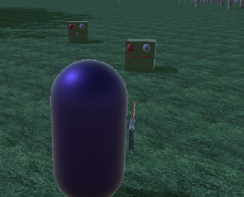
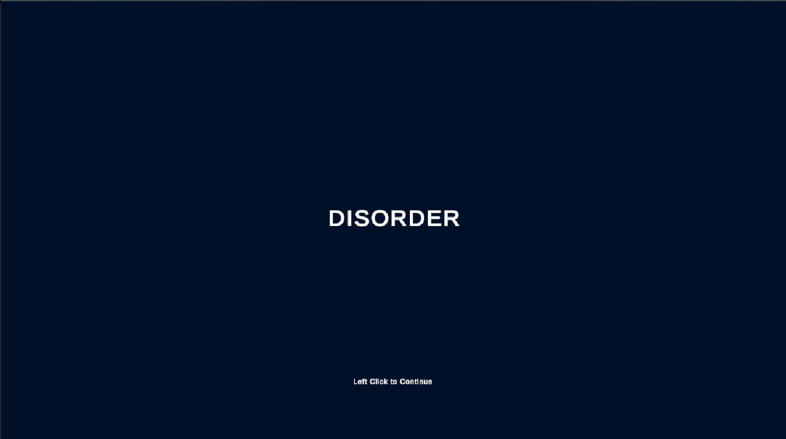
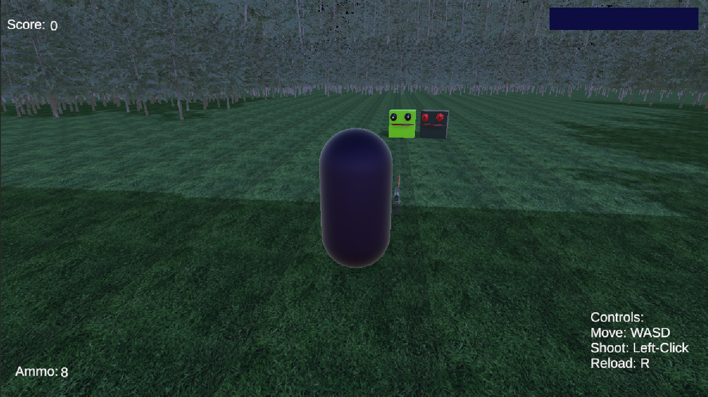
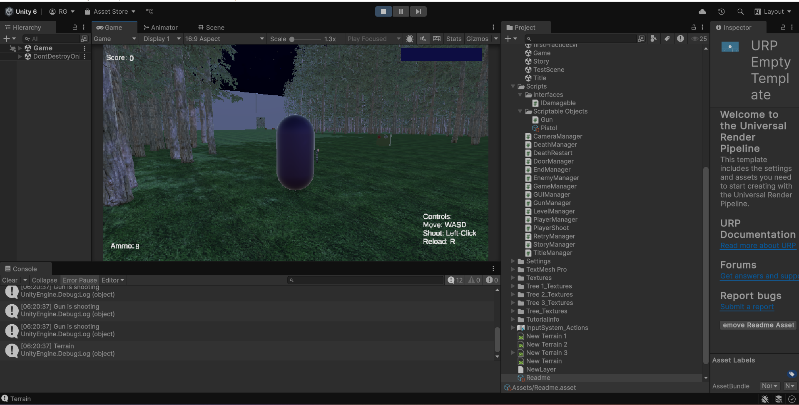

Disorder

Project Background
This was a project I produced in my junior year as well but it was not the same class I made Steampunk in. This was my first time working within a 3D game engine so the game did come out very rough but it was still an experience I believe was necessary for my computer science journey due to the hardwork I had to put in to make sure it came out on time.

Game Synopsis
The game followed a man named Vegas who finds himself alone in the woods following the start of an zombie apocolypse. The game's level ends with Vegas stumpling upon a manor where ideally the full game would take place in.

My Role
My role on this project was significantly more hands on as I was the sole person working on the project. So I did everything like creating the concept, coding the game, handling gameplay mechanics, creating music and sounds, and much more. It was a dificult project to produce but one that I feel was absolutely necessary for devloping my skills as programmer and one day I would like to remake the project and make it better with better models, mechanics, story presentation, etc.
